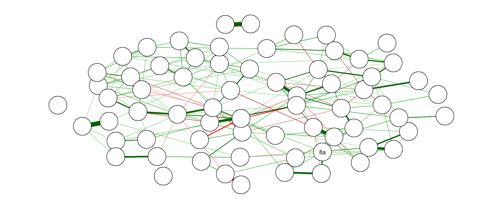
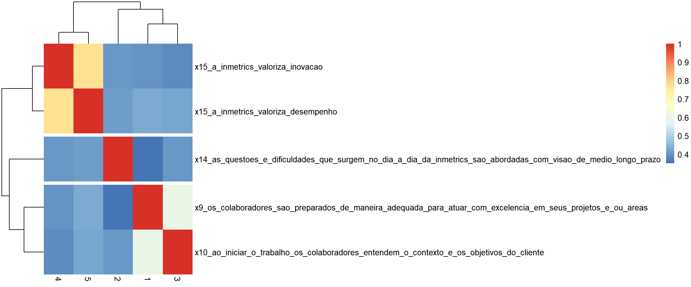

Capítulo 4 Construto “Rapidez Antes de Qualidade”
O construto “Rapidez Antes de Qualidade” é medido pelas questões:
| Código da Variável | Texto no Questionário |
|---|---|
| 9 |
|
| 14 |
|
| 10a |
|
| 15a |
|
| 15b |
|

4.1 Composição do construto
4.2 Teste de Hipótese
“Existe mais foco em rapidez por parte da Liderança versus foco em qualidade por parte dos liderados?”
Hipótese Líderes e liderados diferem na percepção de que rapidez vem antes de qualidade.
4.3 Descrição da Metodologia de Geração do Construto
